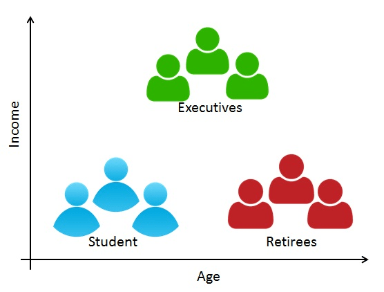
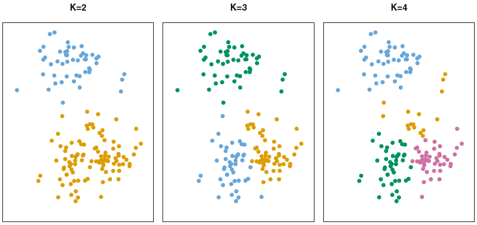
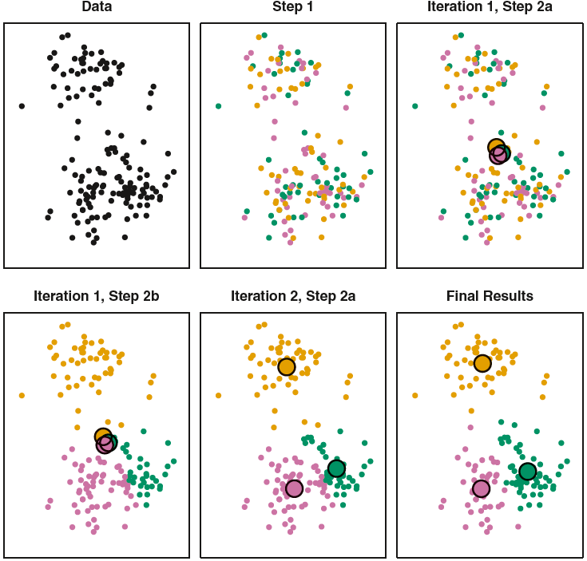
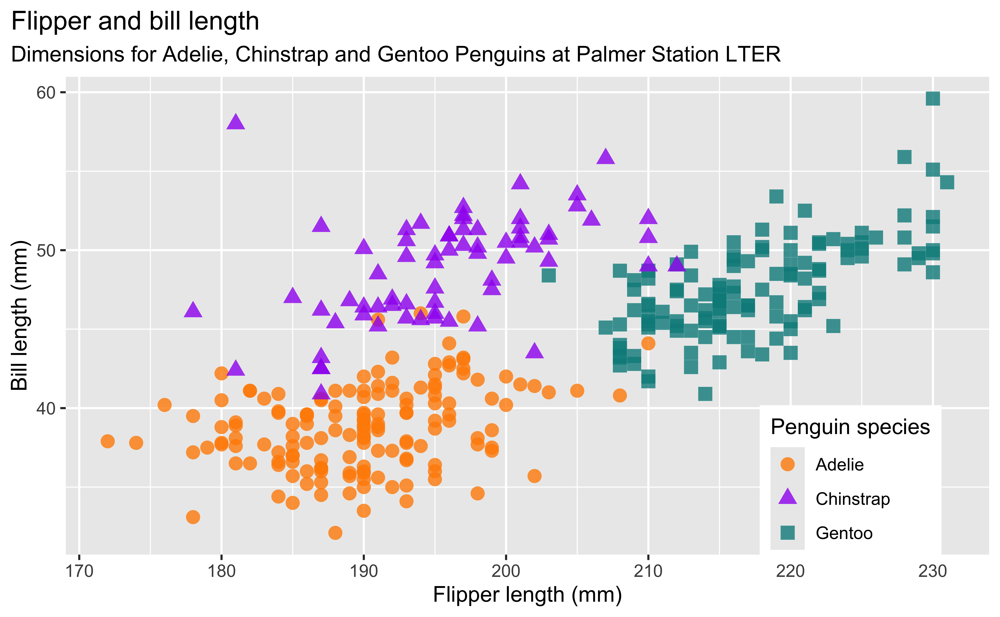
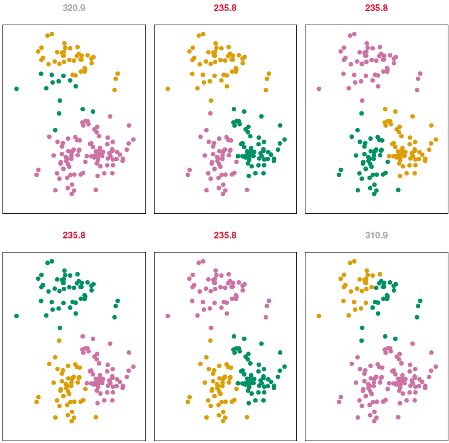

K-Means Clustering
MATH/COSC 3570 Introduction to Data Science
Clustering Methods
Clustering: unsupervised learning technique for finding subgroups or clusters in a data set.
GOAL: Homogeneous within groups; heterogeneous between groups
- When we group data points together, we hope the points in the same group look very much like each other, and the points in the different groups or clusters look very different.
- When I say they look like each other, I mean the points share similar characteristics. In other words, their variables’ values are pretty similar.
. . .
-
Customer/Marketing Segmentation
- Divide customers into clusters on age, income, etc.
- Each subgroup might be more receptive to a particular form of advertising, or more likely to purchase a particular product.
- Divide customers into clusters on the basis of common characteristics.
- Students: the price shouldn’t be that high, and the item should be good-looking and maybe colorful, so it looks young.
- If we target this group, the low price is not that important, but the item should be beautiful, high-class and high quality.
K-Means Clustering
Partition observations into \(K\) distinct, non-overlapping clusters: assign each to exactly one of the \(K\) clusters.
Must pre-specify the number of clusters \(K \ll n\).

- A data point cannot belong to two clusters at the same time.
- As KNN, we have to decide how many clusters the data are partitioned into.
K-Means Algorithm Illustration (K = 3)

K-Means Algorithm
- Choose a value of \(K\).
- Randomly assign a number, from 1 to \(K\), to each of the observations.
- Iterate until the cluster assignments stop changing:
- [1] For each of the \(K\) clusters, compute its cluster centroid.
- [2] Assign each observation to the cluster whose centroid is closest.
- Choose a value of \(K\).
- Randomly assign a number, from 1 to \(K\), here the color, to each of the observations.
- Then we find the mean of each cluster. Because we start from random assignment, it’s not surprising that the three means are close. But still, they are not exactly equal.
- Now, with the means, Assign each observation to the cluster whose centroid is closest. Clearly, all points on the top should be colored in brown, because they are close to the brown mean the most. Right? And the points right here are pink, and data right here are green.
- Now based on this new assignment, we can re-compute new group means because now we have new group assignment.
- And the new means are shown here.
- Based on the new means, we reassign data to a group.
- Then we compute new means, then do new assignment.
- We keep iterating the two steps until all the data points are stick with a group without changing.
K-Means Illustration
Data (Let’s choose \(K=2\))

K-Means Algorithm
- Choose a value of \(K\).
- Randomly assign a number, from 1 to \(K\), to each of the observations.
- Iterate until the cluster assignments stop changing:
- [1] For each of the \(K\) clusters, compute its cluster centroid.
- [2] Assign each observation to the cluster whose centroid is closest.
K-Means Illustration
Random assignment

K-Means Algorithm
- Choose a value of \(K\).
- Randomly assign a number, from 1 to \(K\), to each of the observations.
- Iterate until the cluster assignments stop changing:
- [1] For each of the \(K\) clusters, compute its cluster centroid.
- [2] Assign each observation to the cluster whose centroid is closest.
K-Means Illustration
Compute the cluster centroid

K-Means Algorithm
- Choose a value of \(K\).
- Randomly assign a number, from 1 to \(K\), to each of the observations.
- Iterate until the cluster assignments stop changing:
- [1] For each of the \(K\) clusters, compute its cluster centroid.
- [2] Assign each observation to the cluster whose centroid is closest.
K-Means Illustration
Do new assignment

K-Means Algorithm
- Choose a value of \(K\).
- Randomly assign a number, from 1 to \(K\), to each of the observations.
- Iterate until the cluster assignments stop changing:
- [1] For each of the \(K\) clusters, compute its cluster centroid.
- [2] Assign each observation to the cluster whose centroid is closest.
K-Means Illustration
Do new assignment

Compute the cluster centroid …

K-Means Algorithm
Note
- The K-means algorithm finds a local rather than global optimum.
- The results depend on the initial cluster assignment of each observation.
- Run the algorithm multiple times, then select the one producing the smallest within-cluster variation.
- Standardize the data so that distance is not affected by variable unit.
- What is within-cluster variation? I avoid using mathematical formula. But the idea is if the data points in the same group are very close to their group mean, their within-cluster variation will be small.
- We will have K within-cluster variation, one for each group.
- So we hope the sum of K within-cluster variations or the total within-cluster variation is as small as possible.

Data for K-Means
df <- read_csv("./data/clus_data.csv")
df ## income in thousands# A tibble: 240 × 2
age income
<dbl> <dbl>
1 32.1 167.
2 59.1 56.9
3 54.0 52.4
4 26.3 -13.9
5 61.3 41.1
6 40.7 39.8
# ℹ 234 more rowsdf_clust <- as_tibble(scale(df))
df_clust# A tibble: 240 × 2
age income
<dbl> <dbl>
1 -0.878 1.00
2 1.44 -0.601
3 1.00 -0.668
4 -1.38 -1.63
5 1.64 -0.831
6 -0.137 -0.851
# ℹ 234 more rowslibrary(factoextra) https://bookdown.org/tpinto_home/Unsupervised-learning/k-means-clustering.html#KM1 https://towardsdatascience.com/k-means-clustering-concepts-and-implementation-in-r-for-data-science-32cae6a3ceba https://www.datanovia.com/en/lessons/k-means-clustering-in-r-algorith-and-practical-examples/ https://uc-r.github.io/kmeans_clustering#optimal https://www.statology.org/k-means-clustering-in-r/
Data for K-Means
df_clust |> ggplot(aes(x = age, y = income)) +
geom_point()
kmeans()
(kclust <- kmeans(x = df_clust, centers = 3))K-means clustering with 3 clusters of sizes 67, 88, 85
Cluster means:
age income
1 -0.29 1.33
2 1.04 -0.32
3 -0.85 -0.71
Clustering vector:
[1] 1 2 2 3 2 3 2 3 1 2 2 3 3 2 3 3 1 3 1 1 3 3 3 2 3 3 2 2 3 1 3 2 1 1 2 1 3
[38] 3 3 1 3 3 2 1 3 1 2 3 2 2 2 3 1 3 2 3 3 2 1 2 2 3 2 2 2 3 3 2 3 2 2 3 1 1
[75] 3 2 3 2 2 3 2 2 3 2 1 1 1 2 2 2 3 3 3 3 1 2 1 3 3 2 3 3 2 3 1 2 2 3 1 1 1
[112] 2 1 2 2 2 2 3 2 2 2 1 3 1 3 2 2 2 1 1 2 1 3 2 3 1 1 1 1 3 2 1 1 3 3 3 2 2
[149] 3 2 1 2 1 3 1 3 2 3 1 2 2 1 3 3 3 2 2 1 3 3 2 3 1 1 2 3 2 3 1 3 1 3 1 2 3
[186] 2 2 1 2 2 2 1 3 2 2 2 2 1 1 1 2 1 1 3 1 3 3 1 2 1 3 3 2 2 1 3 3 3 2 1 2 1
[223] 2 3 3 3 2 1 3 1 1 1 3 2 2 2 1 3 3 1
Within cluster sum of squares by cluster:
[1] 66 41 39
(between_SS / total_SS = 69.5 %)
Available components:
[1] "cluster" "centers" "totss" "withinss" "tot.withinss"
[6] "betweenss" "size" "iter" "ifault" kmeans()
kclust$centers age income
1 -0.29 1.33
2 1.04 -0.32
3 -0.85 -0.71kclust$size[1] 67 88 85head(kclust$cluster, 20) [1] 1 2 2 3 2 3 2 3 1 2 2 3 3 2 3 3 1 3 1 1Cluster Info
(df_clust_k <- augment(kclust, df_clust))# A tibble: 240 × 3
age income .cluster
<dbl> <dbl> <fct>
1 -0.878 1.00 1
2 1.44 -0.601 2
3 1.00 -0.668 2
4 -1.38 -1.63 3
5 1.64 -0.831 2
6 -0.137 -0.851 3
# ℹ 234 more rows(tidy_kclust <- tidy(kclust))# A tibble: 3 × 5
age income size withinss cluster
<dbl> <dbl> <int> <dbl> <fct>
1 -0.286 1.33 67 65.9 1
2 1.04 -0.325 88 40.8 2
3 -0.848 -0.714 85 38.9 3 augment adds the point classifications to the original data set:
K-Means in R

Proposed group label:
- Steady-income family
- New college graduates/mid-class young family
- High socioeconomic class
df_clust_k |>
ggplot(aes(x = age,
y = income)) +
geom_point(aes(color = .cluster),
alpha = 0.8) +
geom_point(data = tidy_kclust |>
select(1:2),
size = 8,
fill = "black",
shape = "o") +
theme_minimal() +
theme(legend.position = "bottom")K-Means in R: factoextra
library(factoextra)
fviz_cluster(object = kclust, data = df_clust, label = NA) +
theme_bw()
Choose K: Total Withing Sum of Squares
## wss = total within sum of squares
fviz_nbclust(x = df_clust, FUNcluster = kmeans, method = "wss",
k.max = 10)
Choose K: Average Silhouette Method
## silhouette = Average Silhouette Width Method
fviz_nbclust(df_clust, kmeans, method = "silhouette", k.max = 10)
measuring how well each data point lies within its cluster
Choose K: Gap Statistics
## gap_stat = Gap Statistics
fviz_nbclust(df_clust, kmeans, method = "gap_stat", k.max = 10)
compares the total intracluster variation for different number of cluster k with their expected values under a data with no clustering (these data generated using Monte Carlo simulations). The higher the gap between the observed and expected, the better the clustering.
Practical Issues
- Try several different \(K\)s, and look for the one with the most useful or interpretable solution.
Clustering is not beneficial for decision making or strategic plan if the clusters found are not meaningful based on their features.
The clusters found may be heavily distorted due to outliers that do not belong to any cluster.
Clustering methods are not very robust to perturbations of the data.
23-K means Clustering
In lab.qmd ## Lab 24 section,
Install R package
palmerpenguinsat https://allisonhorst.github.io/palmerpenguins/Perform K-Means to with \(K = 3\) to cluster penguins based on
bill_length_mmandflipper_length_mmof datapeng.
library(palmerpenguins)
peng <- penguins[complete.cases(penguins), ] |>
select(flipper_length_mm, bill_length_mm)

sklearn.cluster
sklearn.cluster.KMeans
import numpy as np
import pandas as pd
from sklearn.cluster import KMeans
from sklearn.preprocessing import StandardScalerdf_clus = pd.read_csv('./data/clus_data.csv')scaler = StandardScaler()
X = scaler.fit_transform(df_clus.values). . .
kmeans = KMeans(n_clusters=3, n_init=10).fit(X)kmeans.labels_[0:10]array([1, 2, 2, 0, 2, 0, 2, 0, 1, 2], dtype=int32)np.round(kmeans.cluster_centers_, 2)array([[-0.85, -0.72],
[-0.29, 1.33],
[ 1.04, -0.33]])